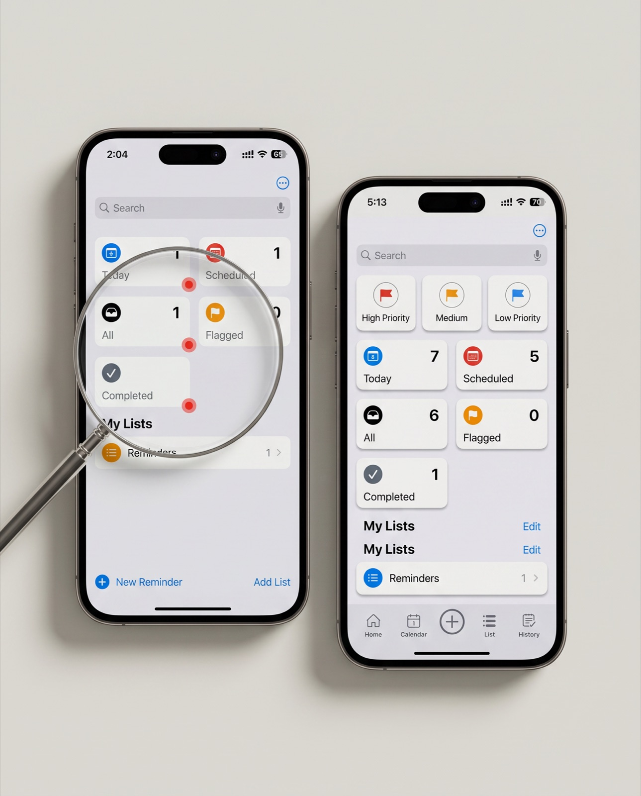

Chapter 01
Start with the right problem.
The gap
Reminders looks simple. That simplicity hides the friction.
Reminders is used for quick, everyday tasks, so small problems add up fast. Unclear labels, inconsistent states and hard-to-reach actions are minor annoyances for some people. For people with low vision, motor difficulties or cognitive load, they make the app harder to use.
I set out to answer one question: where does the home screen make people work harder than they should?
Small friction points compound quickly — especially for the people who rely on reminders most.
Chapter 02
Make the thinking visible.
How I evaluated it
Three lenses on the same screens.
Heuristic review
Walked through the core flows against usability heuristics, noting where clarity, consistency or feedback broke down.
Accessibility pass
Checked contrast, discoverability, interaction clarity and how easily people could recover from mistakes.
Usability testing
Watched 5 people complete everyday tasks to see which issues actually slowed them down.
What I found
10+ gaps, prioritised by severity and effort.
I grouped every issue by how badly it hurt people and how hard it would be to fix. That gave me a clear split between quick wins and deeper structural changes. The home screen held the most important ones:
- 01
Inconsistent smart-list tiles
Every tile showed a count except Completed, so the grid didn't read as one consistent pattern.
- 02
Priority was hidden
Priority existed, but you couldn't see or filter by it from the home screen.
- 03
Primary actions were small text links
“New Reminder” and “Add List” sat in the bottom corners as small text, which made them hard to hit and easy to miss.
Add 2–3 more findings from your audit (with severity) so the 10+ number is backed up on the page.
The redesign
Same app, clearer structure.
I kept Apple's visual language and changed the structure:
- →
Priority at the top
High, Medium and Low filters sit above the smart lists.
- →
Every tile shows its count
Completed now follows the same pattern as the other tiles.
- →
A tab bar with a central add button
Home, Calendar, List and History are always one tap away, and the large + is easy to reach with a thumb.

Chapter 03
What changed. What comes next.
10+
Usability and accessibility gaps documented
3
Of my recommendations later matched changes Apple shipped
5
Participants in usability testing
Validation
Apple later shipped changes in the same direction.
Several issues I identified were later addressed in Apple's own updates, which suggests the analysis pointed in the right direction. Name the 3 changes and the iOS version they shipped in. This is your strongest proof, so make it specific.
Accessibility is quality, not an add-on. Evaluating for the edges makes mainstream products better for everyone.